Academics
I started my freshman year at the University of Michigan in 2019. Now, as I'm only a few weeks from graduating, I love reflecting back on everything I've done.
Majors and Minors
I will be graduating with a B.A. in Communication and Media. I completed two minors: UX Design and Digital Studies. I also completed the Ross School of Business Cappo Sales Track.
Involvement
Awards, Honors, and Certificates
I was honored to receive the following recognitions during my time a Michigan:
- Recipient of the John & Clara Brumm Award given for outstanding performance in the field of Communication and Media
- Five-term James B. Angell Scholar given for consecutive semesters of all A's
- Received a certificate of completion for the Successful Negotiation: Essential Strategies and Skills through the Ross School of Business
 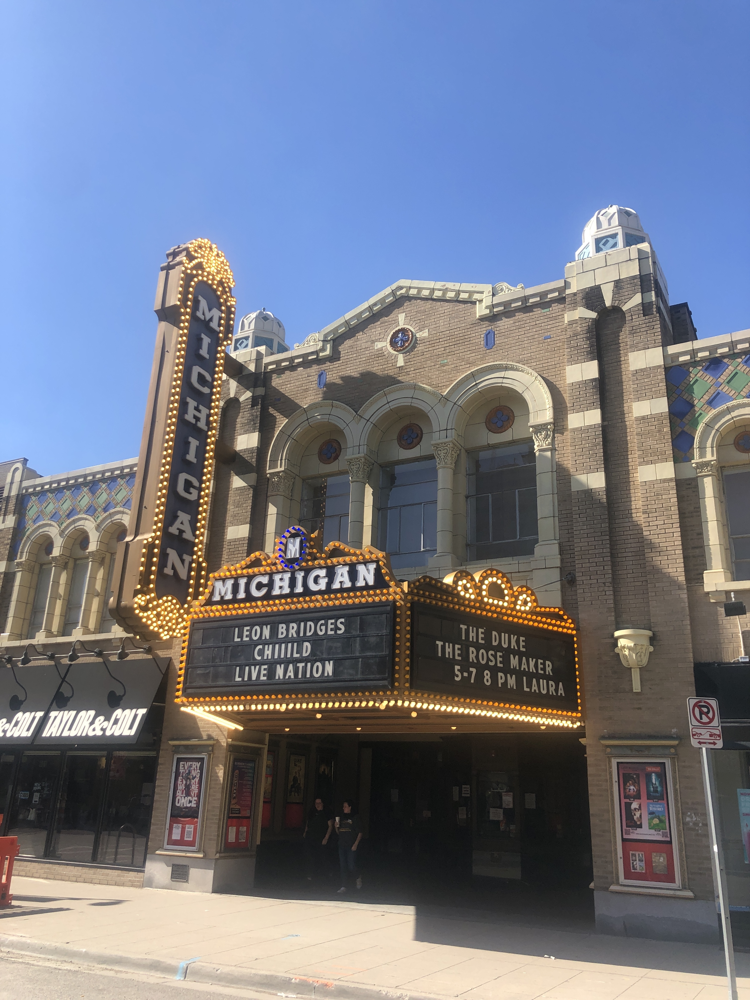
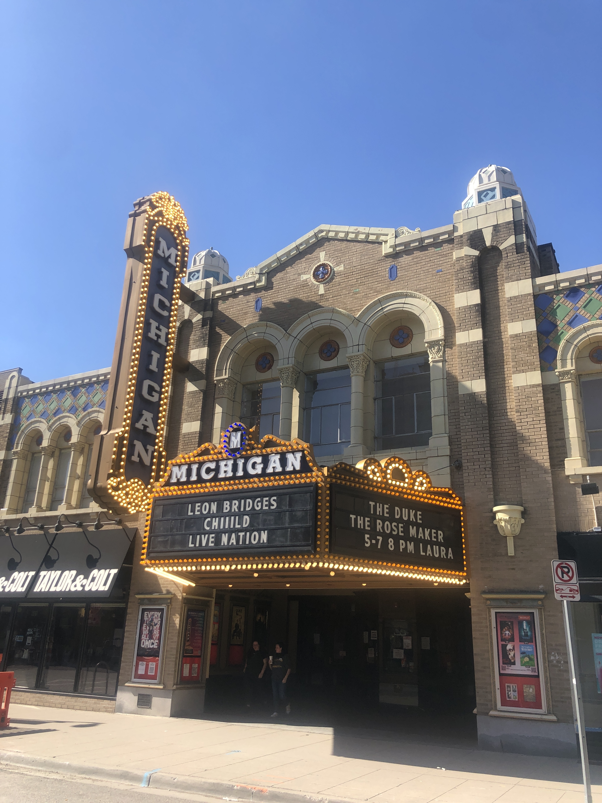
 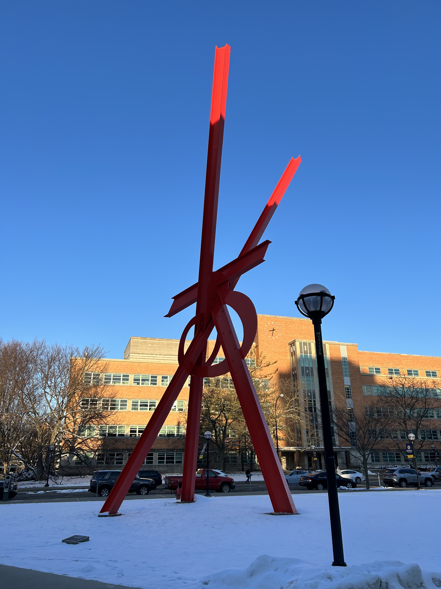
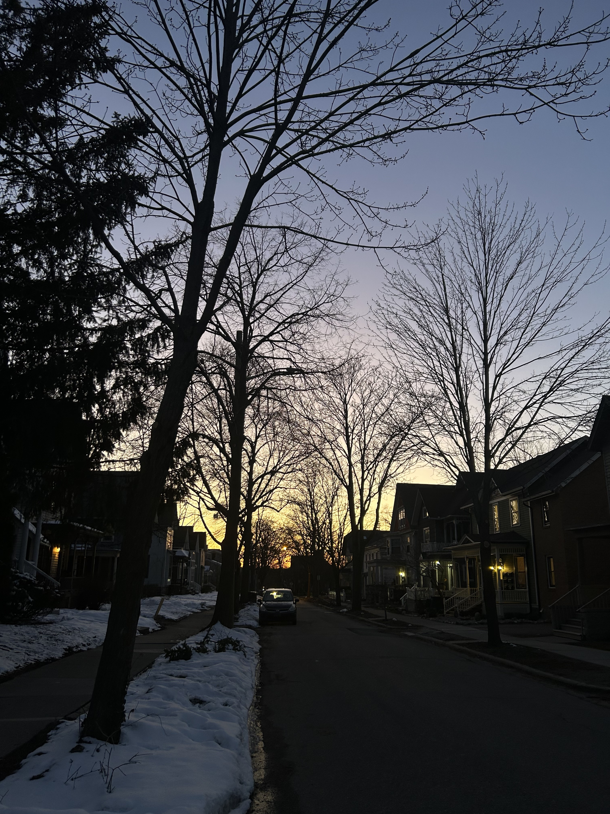
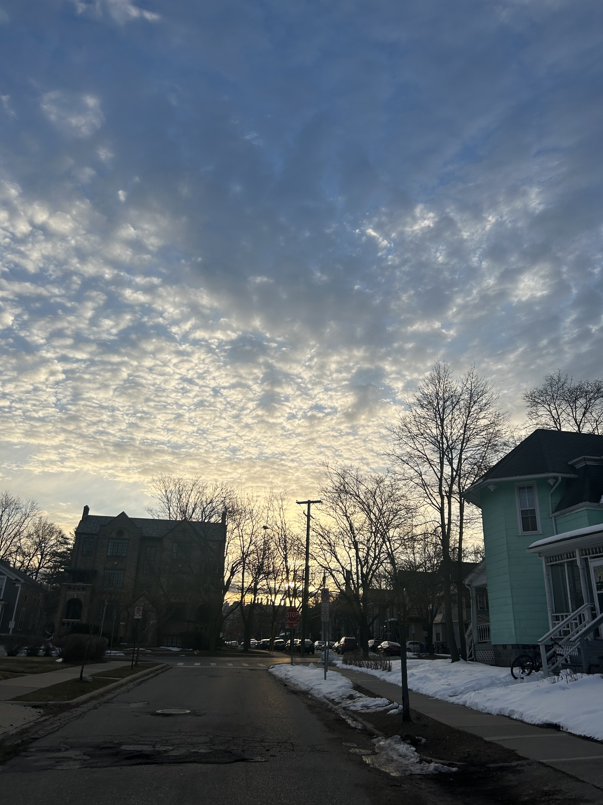
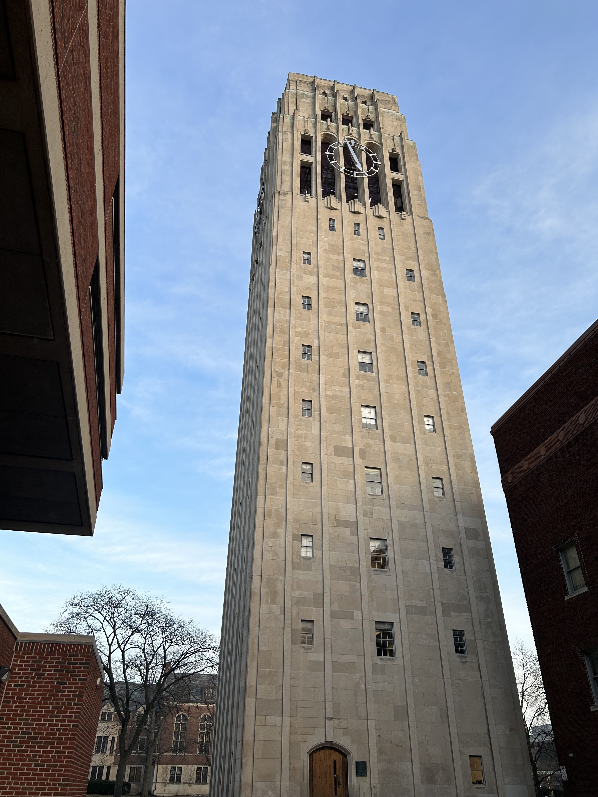
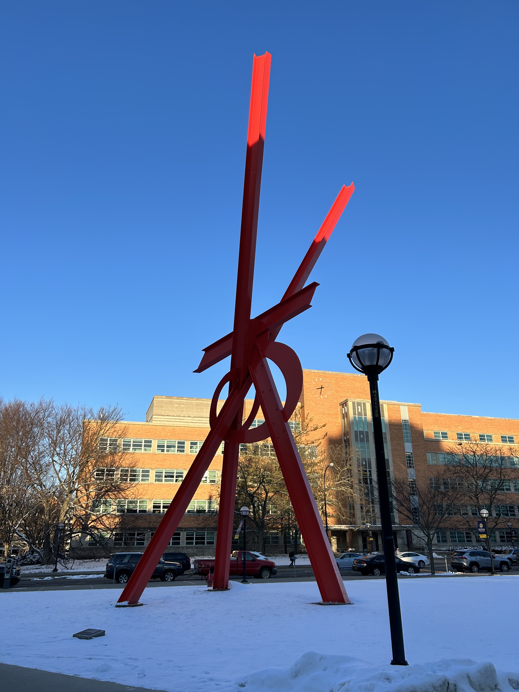
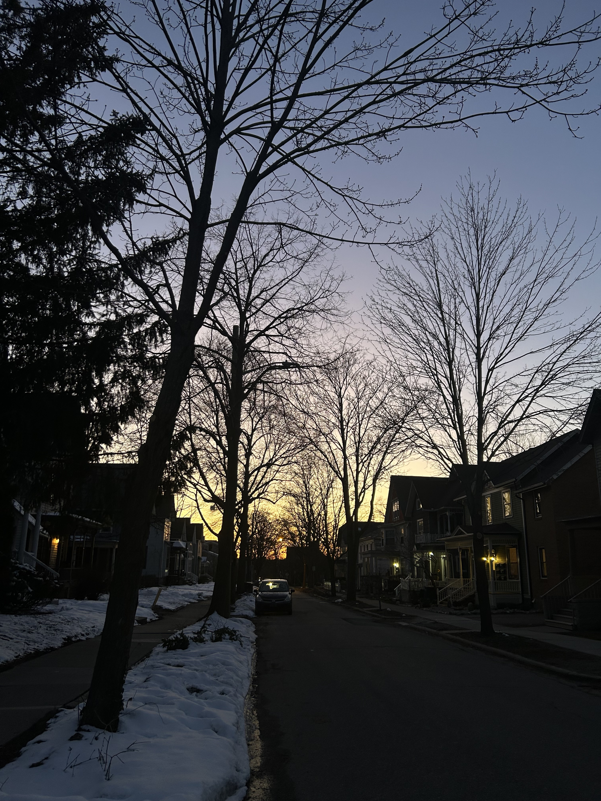
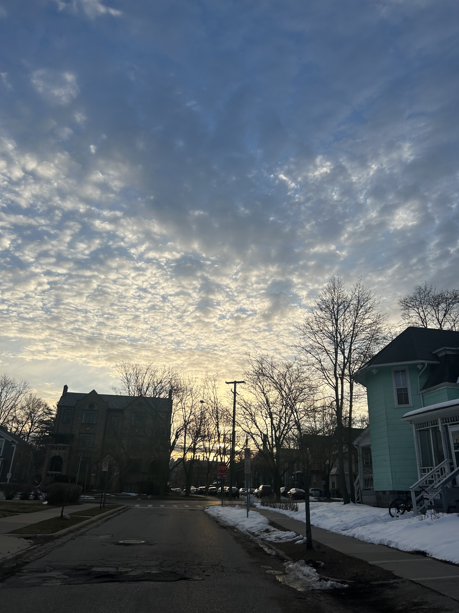
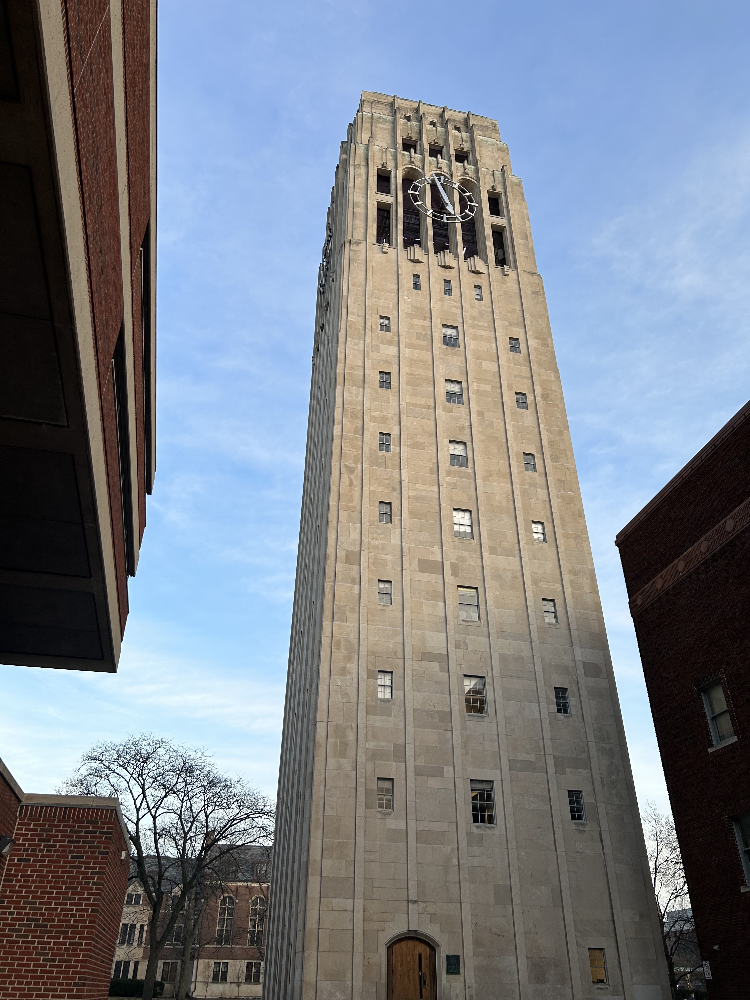
 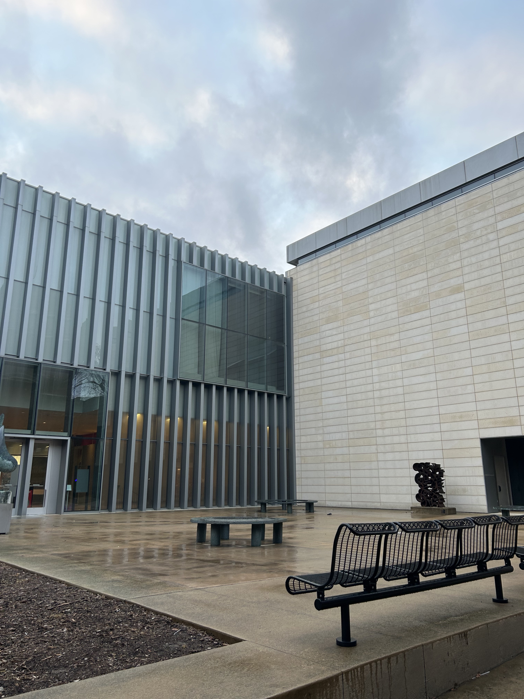
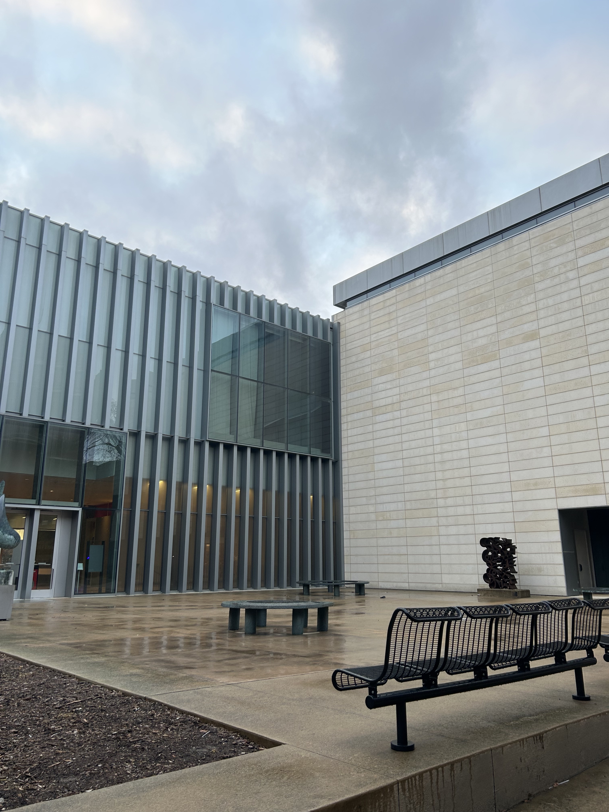